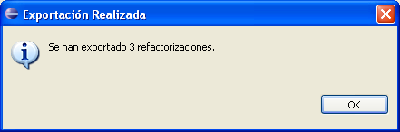

Exportar RefactorizacionesExportar Refactorizaciones
Exportar RefactorizacionesExportar RefactorizacionesEn esta sección aprenderá cómo exportar las refactorizaciones dinámicas existentes, de forma que pueda instalarlas fácilmente en cualquier otra instalación de Eclipse con el Plugin de Refactorización Dinámica.

Seleccione Exportar... en el menú
Aparecerá una ventana con la lista de refactorizaciones dinámicas disponibles.
CTRL al mismo tiempo que pincha sobre cada una de ellas
para realizar una selección múltiple.(...) e indique el directorio de salida donde quiera
que se creen los ficheros de las refactorizaciones exportadas.
Se creará una nueva carpeta en ese directorio por cada refactorización exportada.

Seleccione el directorio de salida
Después de un breve momento, aparecerá un mensaje de confirmación informándole del número de refactorizaciones que se exportaron finalmente.
Se podrán encontrar las refactorizaciones exportadas en el directorio de salida seleccionado.

Confirmación